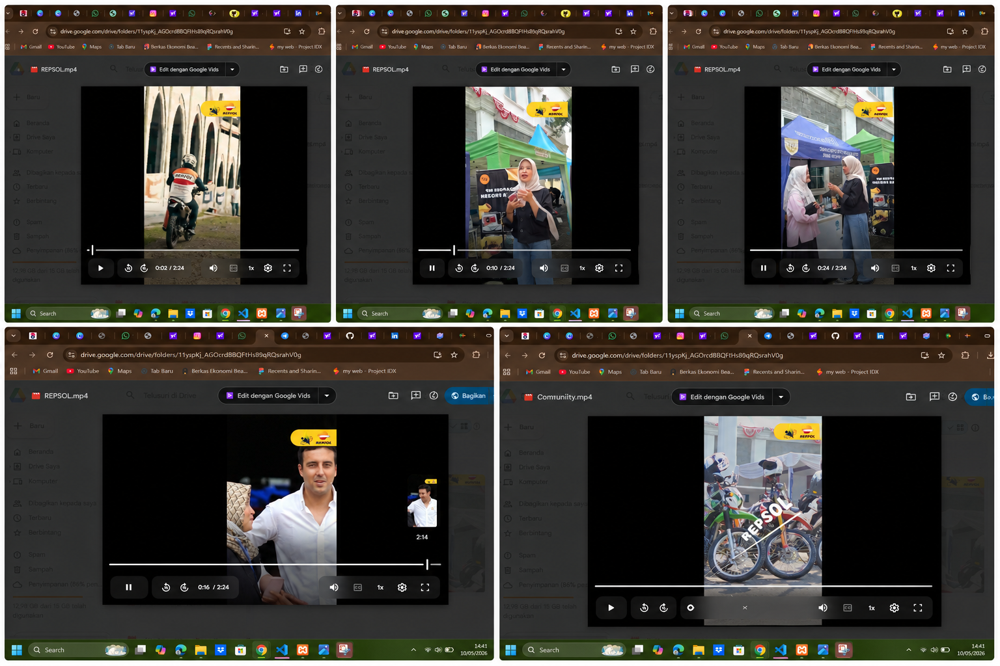

Video Editing Creative Content
Proyek editing video kreatif untuk konten promosi, event, dan media sosial dengan konsep visual modern, transisi menarik, color grading, serta motion sederhana agar video lebih engaging.

Ringkasan Proyek
Proyek ini menampilkan kemampuan editing video mulai dari pemotongan footage, sinkronisasi musik, penambahan efek visual, transisi cinematic, hingga rendering final untuk kebutuhan konten media sosial dan promosi digital.
Fitur Utama
- Video cinematic dan modern
- Transisi dan efek visual menarik
- Color grading profesional
- Editing untuk media sosial
Tools yang Digunakan
CapCut, Adobe Premiere Pro, VN Editor, motion effect, dan color grading.